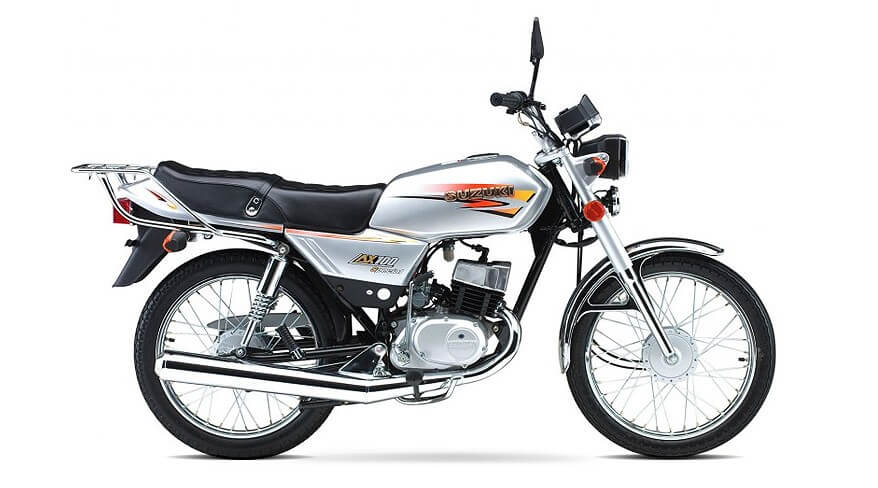

Detalles de la Moto
Marca: Suzuki
Modelo: AX 100
Año: 2007
Kilometraje: 0 km
Descripción: ¡Atención, exploradores urbanos y aventureros de la supervivencia! Les presento la poderosísima AX100, la moto que ha cruzado más fronteras que un pasaporte falso. Ideal para cruzar el tapón del Darién, la mojana o el trancón de las 6 p.m., esta máquina no conoce límites. Su brutal motor 100cc te ofrece la fiabilidad de un tanque de guerra y la velocidad de un chisme en pueblo pequeño. ¡Dale arranque y siente cómo la AX100 desafía la física, la lógica y hasta la paciencia de los mecánicos!
Precio: 4.000.000 $
Contacto del Vendedor
Pepe3141592654
pepemotos@hotmail.com